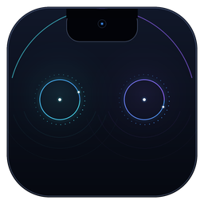

Made for macOS
Keep your quota
in sight.
Your remaining Codex quota, beside the MacBook notch. A glance is all it takes.

A little space. A clear picture.
Left is your 5-hour quota. Right is your weekly quota. Both show what remains.
Interactive simulation with example values. Hover to reveal percentages. Click either satellite for settings.
Glance, then carry on.
The satellites expand on hover and retract when you leave, without taking keyboard focus.
Just enough control.
Launch at Login, 1 / 5 / 15 minute checks, available resets, and Quit. Settings dismiss after three idle seconds.
Know when things change.
Native notifications mark quota resets, drops below 10%, and changes to available reset credits.
If a check fails, the last good reading dims. Unknown reset counts stay unknown. You can manage notifications in macOS System Settings.
Your Codex sign-in.
Already taken care of.
Sign in through Codex as usual. CodexSatellites reads that local login to request your quota from OpenAI.
Read-only by design
No separate login, credential storage, or changes to your Codex auth file. Reset credits are displayed, never consumed.
No extra audience
No analytics, remote telemetry, usage tracking, or cloud sync. The widget reads the app’s local cache and never contacts OpenAI itself.
Make room for
one small utility.
Download v0.4.0
Before you install
macOS 15 or later and an existing local Codex sign-in. Satellites need a usable built-in MacBook notch; the widget also works on Macs without one, with Launch at Login and Frequency available through macOS Edit Widget.
- Download the v0.4.0 DMG from GitHub Releases.
- Drag CodexSatellites into Applications.
- Launch it. Because v0.4.0 is not notarized, macOS may require you to explicitly approve the app on first open.
- Add the widget from the macOS widget gallery if you want it.
Free and open source. MIT licensed.